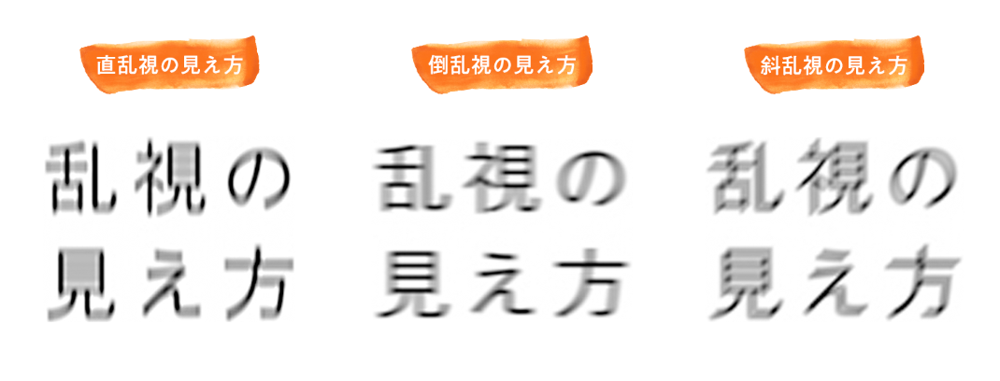

🤓 遠用メガネ度数決定クイズ 🤓
スタッフ向け - 処方スキルアップ
🤓 遠用メガネ度数決定クイズ
❌ 間違えた問題:
0問
🆕 未挑戦の問題:
28問
✅ 正解した問題:
0問
📊 全問題数:
28問
今日の3問: 間違い・未挑戦を優先出題
全問モード: 全28問を順番に出題
全問モード: 全28問を順番に出題
問題 1 / 28
正解: 0
問題 1
眼鏡処方の第一歩として、最初に行うべきことは何ですか？
問診（主訴と使用目的の聴取）
オートレフフラクトメータ（AR）での測定
視力検査
眼圧検査
解説：全ての検査の基本は問診です。患者様が何に困っていて、新しいメガネをどのような目的で使いたいのか（例：運転、PC作業、読書）を正確に把握することが、満足度の高い処方の第一歩となります。
問題 2
オートレフ（AR）の測定値は、どのように扱うのが最も適切ですか？
そのまま処方値として採用する
あくまで他覚的屈折検査の参考値として扱う
レンズメーターの値と比較して、平均値をとる
患者様には見せないようにする
解説：オートレフは器械による他覚的な測定値であり、調節の介入などにより誤差が生じることがあります。そのため、処方の出発点となる重要な参考値ですが、必ず自覚的屈折検査で確認・修正が必要です。
【注意すべきレフかどうかを判断する要点】

①S、C、Aに極端なばらつきがある
・1段階（0.25ステップ）程度のばらつきではなく、数値が極端に飛ぶ
・平均値を信用できない
・どの数値も安定しない
②信頼係数が低い
・本機種では「9」が最高のため「5」「6」はかなり低い
・※機種により表示が異なる
③角膜曲率半径が正常範囲から大きく外れている
・正常範囲の7.60～8.10mmを大きく超えている
・何もせずここまで数値が大きくなることはないので原因を考える（後述）
④瞳孔間距離（PD）が極端に広い／狭い
・PDの平均は約58mm～66mm
・PDが極端に広い／狭い場合は外見と合っているか確認する
・左⇔右眼の測定の最中に一回顔を外してしまうと極端な誤差が出やすい
※①③④はレフの測定中にモニターに表示されるので、レフの用紙がプリントアウトされる前に気づけます。
【注意すべきレフかどうかを判断する要点】
①S、C、Aに極端なばらつきがある
・1段階（0.25ステップ）程度のばらつきではなく、数値が極端に飛ぶ
・平均値を信用できない
・どの数値も安定しない
②信頼係数が低い
・本機種では「9」が最高のため「5」「6」はかなり低い
・※機種により表示が異なる
③角膜曲率半径が正常範囲から大きく外れている
・正常範囲の7.60～8.10mmを大きく超えている
・何もせずここまで数値が大きくなることはないので原因を考える（後述）
④瞳孔間距離（PD）が極端に広い／狭い
・PDの平均は約58mm～66mm
・PDが極端に広い／狭い場合は外見と合っているか確認する
・左⇔右眼の測定の最中に一回顔を外してしまうと極端な誤差が出やすい
※①③④はレフの測定中にモニターに表示されるので、レフの用紙がプリントアウトされる前に気づけます。
問題 3
「雲霧法」の主な目的は何ですか？
患者様の調節力を介入させない（リラックスさせる）ため
乱視の軸を正確に測定するため
両目の視力バランスを整えるため
偽近視かどうかを判断するため
解説：雲霧法は、わざと強いプラス度数（雲霧レンズ）を入れて視界をぼやけさせ、目のピント調節筋（毛様体筋）の緊張をリラックスさせる手法です。これにより、調節が介入しない状態での正確な屈折度数を測定することができます。
問題 4
雲霧法で、プラス度数を弱めていく際に、患者様から視力向上の訴えがなくなった最初の度数を何と呼びますか？
仮性度数
最高視力値
球面度数の最強度数（最強主経線）
加入度
解説：プラス度数を弱めていき、それ以上弱めても視力が向上しなくなった最初の度数が、その時点での「最高視力の最強度数」となります。これは、乱視がない場合の球面度数の決定や、乱視検査の準備段階となります。
問題 5
放射線状の視標（乱視表）を見てもらい、特に濃く見える線の方向を確認する目的は何ですか？
乱視の度数を特定するため
乱視の軸方向を推定するため
近視の度数を特定するため
視力の質を確認するため
解説：乱視があると、放射線視標のある特定の方向の線が他よりも濃く、はっきりと見えます。その方向を確認することで、乱視の軸（Axis）をおおよそ推定することができます。
 乱視の種類による検査表の見え方の違い（直乱視・倒乱視・斜乱視）
乱視の種類による検査表の見え方の違い（直乱視・倒乱視・斜乱視）
乱視の種類による検査表の見え方の違い（直乱視・倒乱視・斜乱視）
問題 6
クロスシリンダーレンズを用いて乱視軸を精密に検査する際、患者様には何を比較してもらいますか？
レンズを反転させた時の、視標の見え方の差
赤と緑の背景での視標の見え方
片目ずつでの視標の見え方
視標の大きさの変化
解説：クロスシリンダー法では、レンズを反転させた時の1番の見え方と2番の見え方を比較してもらい、「どちらがよりハッキリ、または黒く見えるか」を答えてもらいます。その回答を元に、軸を微調整していきます。
乱視の種類による検査表の見え方の違い（直乱視・倒乱視・斜乱視）
乱視の種類による検査表の見え方の違い（直乱視・倒乱視・斜乱視）
問題 7
クロスシリンダーで乱視度数を決定する際、最終的にどの状態を目指しますか？
1番が圧倒的に良く見える状態
2番が圧倒的に良く見える状態
1番と2番の見え方が同じになる状態
どちらもぼやけて見える状態
解説：乱視度数が適切に矯正されると、クロスシリンダーを反転させても、縦線と横線の見え方の差がなくなります。つまり、「どちらも同じくらいに見える」という状態が、乱視度数決定のゴールとなります。
乱視の種類による検査表の見え方の違い（直乱視・倒乱視・斜乱視）
乱視の種類による検査表の見え方の違い（直乱視・倒乱視・斜乱視）
問題 8
遠視眼の処方の原則として正しいものはどれですか？
最高視力の得られる最「強」のプラス度数
最高視力の得られる最「弱」のプラス度数
オートレフと同じ度数
本人が楽だと感じる一番弱い度数
解説：遠視眼は、自身の調節力を使ってピントを合わせているため、その調節力をできるだけリラックスさせてあげることが重要です。そのため、良好な視力が得られる範囲で最も強いプラス度数（最強度数）を処方するのが原則です。
問題 9
近視眼の処方の原則として正しいものはどれですか？
最高視力の得られる最「強」のマイナス度数
最高視力の得られる最「弱」のマイナス度数
少しぼやけるくらいの弱い度数
本人が一番よく見えると答えた最も強い度数
解説：近視の矯正でマイナス度数を強くしすぎると（過矯正）、目は常にピントを合わせようと緊張状態になり、眼精疲労の原因となります。そのため、良好な視力が得られる範囲で最も弱いマイナス度数（最弱度数）を処方するのが原則です。
問題 10
新しいメガネで「少しクラクラする」と患者様が訴えた際、度数以外で考えられる主な原因は何ですか？
レンズのコーティングの種類
フレームのフィッティング（前傾角やそり角）が適切でないこと
フレームの色が合わない
レンズのメーカー
解説：度数が合っていても、フレームの傾き（前傾角）や顔への沿い方（そり角）が適切でないと、見え方に違和感や歪みが生じることがあります。特に乱視が強い場合に影響が出やすいです。
問題 11
眼鏡処方において「頂点間距離（VD）」の測定と考慮が特に重要になるのは、どのような場合ですか？
度数が強い（概ね±4.00D以上）場合
乱視が強い場合
老眼が始まったばかりの場合
プリズム処方の場合
解説：レンズと目の距離（頂点間距離）が変わると、特に度数が強い場合に、実際に目に届く度数が変化してしまいます。検査時と装用時でこの距離が異なると、見え方に大きな影響が出るため、正確な測定が重要です。
 頂点間距離による度数換算表（近視・遠視）
頂点間距離による度数換算表（近視・遠視）
頂点間距離による度数換算表（近視・遠視）
問題 12
「利き目」は、眼鏡処方においてどのような意味を持ちますか？
左右の矯正視力に差をつけざるを得ない場合、利き目を優先して矯正する
利き目には必ず強い度数を入れる
利き目には乱視矯正をしない
眼鏡処方には全く関係ない
解説：不等像視などで左右の度数を完全に同じにできない場合、人は無意識に利き目からの情報を優先します。そのため、利き目の方の視力がより良好になるように度数を調整することが、快適な見え方につながります。
問題 13
最終的な度数を決定する前に、テストフレームをかけた患者様になぜ歩いてもらうのですか？
疲労度をチェックするため
空間視（足元の見え方、歪み）に問題がないか確認するため
全身のバランス感覚を測るため
検査終了の合図
解説：特に乱視の度数や軸を大きく変えた場合、静止した状態では良くても、歩いた時に床が浮いて見えたり、空間が歪んで感じられたりすることがあります。実際の使用感を確認するために、歩行テストは非常に重要です。
問題 14
初めてメガネをかける患者様への度数決定で、特に配慮すべきことは何ですか？
必ず完全矯正値にする
少し強めの度数にして、将来の近視進行に備える
慣れやすさを考慮し、完全矯正値より少し弱めにすることがある
乱視は矯正しない
解説：初めてのメガネの場合、脳が新しい見え方に慣れていないため、完全矯正値では違和感や疲れを感じることがあります。そのため、患者様と相談の上、あえて少し弱い度数から始めて、慣れてもらうことを優先する場合があります。
問題 15
レンズメーターで測定した古いメガネの度数が、今回の処方と大きく異なる場合、どうしますか？
患者様に見え方の変化や違和感について十分に説明し、同意を得る
必ず古いメガネに近い度数に調整する
レンズメーターの測定値は無視する
新しい処方箋の発行を断る
解説：度数を大きく変更すると、見え方が劇的に変わるため、患者様が強い違和感を覚える可能性があります。「今よりハッキリ見えますが、慣れるまで少し時間がかかるかもしれません」といった事前説明とインフォームドコンセントが不可欠です。
問題 16
「球面レンズ」と「円柱レンズ」の組み合わせで、何を矯正しますか？
近視と老眼
近視または遠視と、乱視
斜位と斜視
色覚異常と立体視
解説：球面レンズ（S）は、近視や遠視といった全体的なピントのズレを矯正します。円柱レンズ（C）は、乱視という方向によるピントのズレを矯正します。この二つを組み合わせて、鮮明な視界を作ります。
問題 17
瞳孔径が小さい場合、焦点深度はどうなりますか？
浅くなる（ピントの合う範囲が狭くなる）
変わらない
深くなる（ピントの合う範囲が広くなる）
瞳孔径と焦点深度は無関係
解説：瞳孔が小さいと、カメラの絞りを絞った時のように、ピントの合う範囲（焦点深度）が深くなります。そのため、多少ピントがずれていても、ある程度はっきり見えてしまいます。明るい場所での検査ではこの点に注意が必要です。
問題 18
乱視の軸が「180度」の場合、乱視検査表のどの方向の線がボヤけますか？
縦方向
横方向
斜め45度方向
すべての方向
解説：乱視の軸が180度（直乱視）の場合、角膜の縦方向（90度方向）のカーブが強いため、乱視検査表の縦の線はハッキリ見え、横の線がボヤケるのが特徴です。矯正には、軸180度にマイナスの円柱レンズを置きます。

直乱視・倒乱視・斜乱視それぞれの見え方の違い
問題 19
完全矯正値で視力が1.0の患者様が「運転免許の更新で1.0必要だが、今のメガネは0.8しか見えない」と来院されました。最も考えられることは何ですか？
白内障が進行した
前回の処方が、慣れやすさを優先した低矯正だった
乱視が進行した
患者様の勘違い
解説：特に初めてのメガネや、度数を大きく変えた場合、意図的に少し弱い度数（低矯正）で処方することがあります。生活に支障はなくても、特定の目的（免許更新など）でより高い視力が必要になった場合、再調整が必要となります。
問題 20
仮性近視の可能性がある若い患者様に雲霧法を行うと、どのような反応が予想されますか？
最初から視力表がよく見える
雲霧後、AR値より大幅に近視が弱くなる、または遠視になる
乱視の軸が大きく変わる
雲霧をしても全く視力が変わらない
解説：仮性近視は調節の緊張が原因です。雲霧法でその緊張が解けると、本来の屈折状態が現れるため、器械で測定したAR値よりも近視がかなり弱くなったり、時には遠視であることが判明したりします。
問題 21
レッドグリーン（二色）テストで、近視の患者様が「赤がハッキリ見える」と答えた場合、度数はどうすべきですか？
マイナス度数をさらに強める
マイナス度数を弱める
乱視の度数を調整する
このままで良い
解説：近視矯正の場合、「赤がハッキリ見える」のは低矯正（度数が弱い）のサインです。赤色光は波長が長く網膜より手前に焦点を結びやすいため、度数が足りないと赤が見やすくなります。この場合、マイナス度数をさらに強めて調整します。逆に「緑がハッキリ」は過矯正のサインで、度数を弱める必要があります。理想は「赤と緑が同じに見える」状態です。※遠視の場合は上記の逆となります。
 赤緑テストの仕組み：過矯正・低矯正・適正矯正の見え方の違い
赤緑テストの仕組み：過矯正・低矯正・適正矯正の見え方の違い
赤緑テストの仕組み：過矯正・低矯正・適正矯正の見え方の違い
問題 22
不同視（左右の度数差が大きい）の眼鏡処方で、最も注意すべきことは何ですか？
左右の網膜に映る像の大きさの違い（不等像視）による違和感
フレームが傾きやすいこと
片方のレンズだけが非常に高価になること
見た目のバランスが悪くなること
解説：左右の度数差が大きいと、それぞれの目で見える像の大きさが異なってしまい、これが強い違和感や頭痛の原因となります。そのため、完全矯正ではなく、左右差を少なくした常用可能な度数に調整することがあります。
問題 23
眼鏡処方における「S.E.（球面等価度数）」が有用なのは、どのような場面ですか？
乱視がない場合
コンタクトレンズ処方への換算や、大まかな屈折状態を把握する時
老眼鏡の度数を決める時
プリズム度数を決める時
解説：球面等価度数（球面度数＋円柱度数の半分）は、乱視を含んだ全体の屈折状態を、乱視がないかのように一つの球面度数で近似的に表した値です。大まかな度数の把握や、コンタクトレンズ処方の参考に役立ちます。
問題 24
眼鏡処方で、なぜ視力値を「1.5」や「2.0」まで目指さないのですか？
レンズの制作技術に限界があるから
過矯正になりやすく、眼精疲労の原因になるから
1.0以上の視力は日常生活に不要だから
保険診療のルールで決まっているから
解説：必要以上の視力を目指して度数を強くすると、過矯正状態になりやすくなります。過矯正は、目が常に緊張状態になるため、頭痛や肩こりといった眼精疲労の大きな原因となります。快適に使えることがメガネの最も重要な役割です。
問題 25
患者様が「一番よく見える度数にしてほしい」と強く希望した場合、どのように対応するのが望ましいですか？
過矯正のリスクと疲れやすさについて説明し、常用可能な快適な度数を提案する
希望通り、最も強く見える度数で処方する
院長に相談する
希望には応えられないと断る
解説：「最高視力＝最良のメガネ」ではないことを丁寧に説明する必要があります。「よく見えるけれど疲れるメガネ」よりも、「少し視力は落ちても一日中快適なメガネ」の方が、生活の質は向上することを伝え、納得してもらうことが大切です。
問題 26
パソコン作業用のメガネを処方する際、モニターの距離以外に確認すべき重要なことは何ですか？
キーボードのメーカー
椅子の高さ
モニター画面と手元の書類を交互に見るか
部屋の広さ
解説：パソコン作業と一言で言っても、画面だけを見るのか、手元の書類も頻繁に見るのかで、最適なレンズの種類（中近か近々かなど）が変わってきます。具体的な作業内容のヒアリングが重要です。
問題 27
患者様が「今のメガネで遠くは良く見えるが、スマホが見にくい」と訴えています。最も可能性が高いのは何ですか？
近視が進行した
老眼（調節力の低下）が始まった、または進行した
乱視が進行した
白内障が始まった
解説：遠方の見え方に変化がなく、近方のみが見えにくくなった場合、最も考えられるのは加齢による調節力の低下、つまり老眼です。
問題 28
眼鏡処方の最終決定において、最も優先されるべきことは何ですか？
検査データ上の完全矯正値
年齢相応の平均的な度数
患者様が最も快適で、目的に合った見え方だと感じること
前回と同じ度数
解説：検査データはあくまで客観的な指標です。最終的には、トライアルレンズを装用してもらい、実際の使用環境を想定した上で、患者様自身が「これなら快適に使える」と感じる度数に調整することが、満足度の高い眼鏡処方のゴールです。